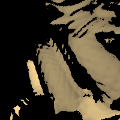

Overview
The aim of this project was to create a ray tracer which, given a .obj file, will output an image rendering of the object contained within. If the .obj file is not modified slightly to contain a camera (with position, look direction, and FOV) and/or lights (with position, color, and intensity), then the renderer picks the best values for these missing ones in an attempt to present the scene in a reasonable way.
Examples & Features
Below are some examples of scenes rendered with my ray tracer. As you can see from some of the images, the ray tracer is capable of handling all three types of lighting (ambient/specular/diffuse), reflections, and shadows.
Cornell Boxes

Part of a Dragon
Authors and Contributors
Just me, Jacob Knispel (@knispeja) :)